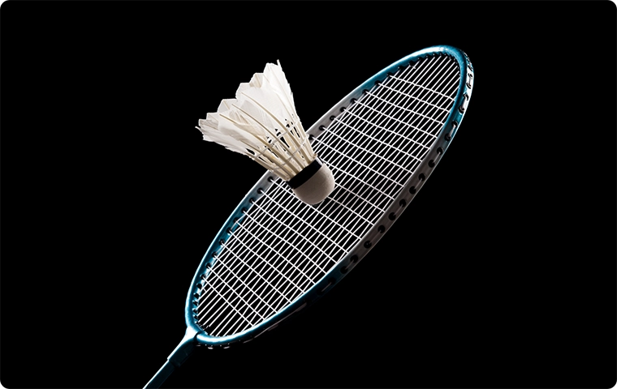

繊維をもっと自由に、自在に。
NANODESIGN®は、東レの革新的な複合紡糸技術。繊維製造過程でポリマーの流れを何度も分割、細かな流れを精密に制御することで、従来にない特殊断面形状を実現します。天然素材のような快適さに撥水性などの機能を付与したり、よりサステナブルな素材を使用したりと、この世界にまったく新しい繊維を創り出します。
TECHNOLOGY
ポリマーをナノスケールで制御し、
繊維の「形状」「精細さ」「組み合わせ」をデザイン。

SOLUTION
従来にはない質感や加工性をもつ、
独自のファッションテキスタイルを実現。
-
uts-fit®
生地の加工段階で多数の微細捲縮を発現させ、マイルドでつややかな新しい質感をもつ光沢に。
-
Kinari®
天然シルクを超える上質な光沢感と、天然素材にはない加工・縫製のしやすさを両立。
高分子材料の飛躍的な高性能化、高機能化を。
革新的微細構造制御技術であるNANOALLOY®は、複数のポリマーをナノメートルオーダーで微分散させることで、混合する前の各ポリマー固有の特性を、混合した後の製品でも最大限に発現させることができます。ポリマー材料を使った多分野の製品の飛躍的な高性能化・高機能化を実現します。
TECHNOLOGY
複数のポリマーをナノレベルで分散・混練。
耐熱性や靭性、衝撃吸収性等の特性を向上。
SOLUTION
ミクロンオーダーでは実現できなかった、
高分子材料の高性能化・高機能化が可能に。
-
フィッシングロッド
高弾性樹脂と高強度樹脂をナノレベルで分散・混練させることで、相反する特性の両立を実現。
-
 バドミントン用ストリングス
高速変形時に柔軟性を発揮する素材を複合。打球時 に食いつき、高いコントロールとパワーを発揮。
次世代の産業をリードする、
ナノ積層フィルム。
NANO-multilayerは、わずか0.1mmという厚さの中に約1000層ものフィルムを積み重ね、各フィルムの厚みを高精度にデザインして得られる波長選択性が特長です。例えば電磁波透過性や遮熱性などの機能性と、光沢感などの加飾性を両立させることで次世代モビリティの材料に採用されるなど、新たな産業の創出に貢献しています。
TECHNOLOGY
フィルム層の厚みを個別にナノレベルでデザイン。
積層、既存単層フィルムにはない機能を発現。
SOLUTION
光を透過・反射する波長の高精度なフィルムの制御を実現。
-
金属光沢調フィルム
一層約100nmの異なる種類のポリマーを、約千層積層。金属を含まず、電波の透過性に優れています。
-
視野角制御（AR-HUD）
正面からの光は透過し、斜めからの光を選択的に反射する世界初の光学機能を備えたフィルム。